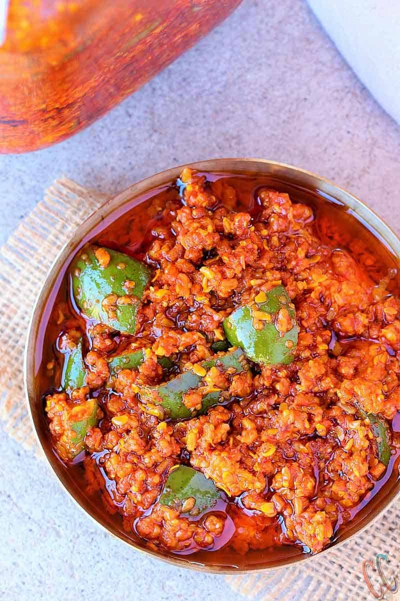

gol keri nu athanu
અથાણું કે અથાણાં એ ભારતીય અને ગુજરાતી ભોજનનું એક ખાસ અંગ છે. અથાણાંં મોટા ભાગે ફળ અને શાકભાજીને, તેલ અથવા લીંબુ કે અન્ય ખાટાં પાણી, મીઠું(લવણ) અને વિવિધ મસાલાઓના ઉપયોગ વડે, આખું વર્ષ સાચવી રાખવાની એક પ્રક્રિયા છે.
ઘરે બનતા અથાણાં ઉનાળામાં બનાવાય છે, તેને લાંબો સમય સુધી સૂર્યનાં તાપમાં સુકવવામાં આવે છે. ત્યાર પછી કાચ અથવા ચીનાઈ માટીની હવાચુસ્ત બરણીમાં ભરી સાચવવામાં આવે છે. અથાણાઓમાં રહેલ ખટાશનો અમ્લિય ગુણ તેમાં જીવાણુઓને થતાંં રોકે છે અને તેલ તેના સંરક્ષક (preservative) તરીકે કાર્ય કરે છે. અથાણાંં ભેજરહિત વાતાવરણમાં લાંબો સમય તાજા અને સુવાસિત રહે છે. ધંધાદારી અથાણાંં બનાવનાર 'સાઇટ્રિક એસિડ' (Citric acid) અને 'સોડિયમ બેન્ઝોએટ' (Sodium benzoate)નો ઉપયોગ સંરક્ષક તરીકે કરે છે.

સામગ્રી |
| કાચી કેરી |
| મેથીના દાણા |
| રાય ના કુરિયા |
| મીઠું |
| તેલ |
| મરચાંનો ભૂકો |
| હળદર પાવડર. |
| હીંગ. |
બનાવવા ની માહિતી
1. પ્રથમ પગલું એ છે કે મેથીના દાણાને ગરમ પાણીમાં 4 થી 6 કલાક પલાળી રાખો. પલાળ્યા પછી વધારાનું પાણી કાઢી લો.
કિચન નેપકીન અથવા પેપર ટુવાલ લો. પલાળેલા મેથીના દાણાને એક સ્તરમાં ફેલાવો અને તેને સંપૂર્ણપણે સુકાવા દો. આ ખૂબ જ મહત્વપૂર્ણ પગલું છે.
2. કેરીને ધોઈને સંપૂર્ણપણે સૂકવી લો.
3. તેને ધારદાર છરી વડે કાપો, અંદરના બીજને કાઢી લો અને નાના ચોરસ ટુકડા કરો, જે ડંખના કદ કરતા થોડા મોટા હોય.
4. 1 ચમચી હળદર અને 150 ગ્રામ મીઠું લો. તેને કેરીના ટુકડામાં ઉમેરો અને તેને સારી રીતે મિક્સ કરો. આને રાતોરાત અથવા ઓછામાં ઓછા 2 કલાક રાખો.
5. કેરી થોડું પાણી છોડશે. પાણી નિતારી લો. તમે પાણી બચાવી શકો છો, તે ઘણા આચર બનાવવામાં ઉપયોગી છે.
6. રસોડાના ટુવાલ પર કેરીને એક સ્તરમાં મૂકો અને તેને હવામાં સૂકવવા દો. આ પગલું લગભગ 5 થી 6 કલાક લેશે.
7. એકવાર મેથીના દાણા અને કેરી સુકાઈ જાય, ચાલો આગળનું પગલું શરૂ કરીએ .
8. એક મોટો બાઉલ લો, તેમાં બધી સામગ્રી ઉમેરો - 400 ગ્રામ મીઠું, 6 ચમચી હળદર પાવડર, મરચું પાવડર, સરસવના દાણા/રાય ના કુરિયા, મેથીના દાણા/મેથી ના કુરિયા અને હિંગના ટુકડા કરો.
9. 150 મિલી તેલ ગરમ કરો અને તેને તૈયાર મસાલા મિશ્રણમાં ઉમેરો.
10. તેમને સારી રીતે હલાવો. પછી તેમાં પલાળેલી અને સૂકી મેથીના દાણા ઉમેરો. સારી રીતે મિક્સ કરો.
11. ત્યાર બાદ તેમાં કેરીના તમામ ટુકડા મિક્સ કરો.
12. તેમને વંધ્યીકૃત જારમાં મૂકો, ખાતરી કરો કે તેમને તમારા હાથની પાછળથી સારી રીતે દબાવો.
13. બરણીને ઢાંકીને 12 કલાક રહેવા દો.
14. એક તપેલીમાં 600 મિલી તેલ સારી રીતે ગરમ કરો. ફ્લેમ બંધ કરો અને તેને સંપૂર્ણપણે ઠંડુ થવા દો.
15. તેમને અથાણાંના બરણીમાં ઉમેરો. તેલ ઉપરથી ઓછામાં ઓછા 2 ઇંચ ઉપર તરતું હોય છે. થોડા કલાકો પછી, તમે ટોચ પર વધુ જોશો નહીં. વધુ તેલ ઉમેરો. અંતે, તેલ તરતું રહે અને અથાણાંને સંપૂર્ણપણે ઢાંકી દે.
મેં વિનેગર પણ ઉમેર્યું છે કારણ કે અહીં યુએસએમાં, તમને ભારત જેવી ખાટી કેરી નહીં મળે. પરંતુ જો તમે ભારતમાં હોવ અને કેરી ખાટી થવા માટે પૂરતી હોય, તો વિનેગર છોડો.
16. ઓરડાના તાપમાને સૂકી જગ્યાએ જારને સ્ટોર કરો. એક અઠવાડિયામાં કેરી નરમ થઈ જશે અને અથાણું તૈયાર થઈ જશે